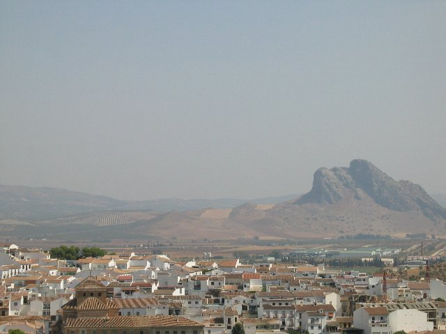

Lover's Leap

From Antequera, crossroads of andaluciaThe town and valley are overlooked by an enormous crag of limestone, 880 metres high, called La PeÃa de los Enamorados, or "The Lovers' Leap". The name comes from a local legend about an impossible love affair between a young Christian man from Antequera and a beautiful Moorish girl from nearby Archidona, who were driven to the top of the cliff by the Moorish soldiers, where, rather than renounce their love, they chose to hurl themselves into the abyss.Thanks to Kevin Collins for helping me to find the name of this rock.
Add a comment


Copyright © Jane Dallaway. Terms of Use